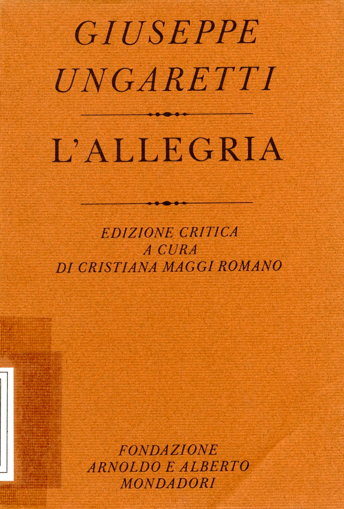
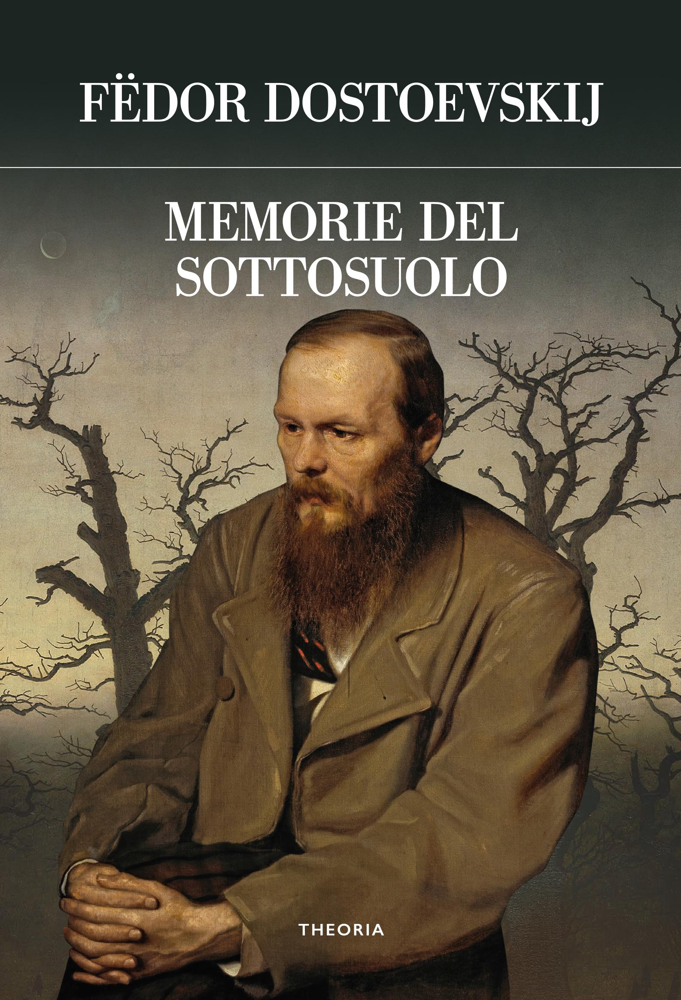

14:30 · 7 OPERE
Il dramma della ragione.
Il filo del discorso
La lettura del proemio di L’ultima dea d’Occidente presenta la distinzione fra una ragione originaria, aperta al significato, e una ragione seconda, orientata al controllo. Dr Divago contesta l’idea che la razionalità antica coincida con i criteri sistematici moderni: nella sua interpretazione, mito, sentimento, sapere della natura e dimensione spirituale appartenevano a un orizzonte comune. Il richiamo al Tao tê ching introduce il limite del nominare, mentre la poesia di Ungaretti accompagna la riflessione sullo scarto fra ciò che si sente e ciò che si riesce a esprimere. La pluralità delle forme della ragione è poi mostrata attraverso figure scientifiche, artistiche e letterarie. Il problema diventa sociale quando il calcolo dell’utile pretende di esaurire il rapporto con la natura e con gli altri. Leopardi, il racconto biblico e Dante entrano nella difesa di un pensiero che riconosce la mortalità e i limiti delle proprie misure. Memorie del sottosuolo conclude il percorso come immagine narrativa della crisi moderna. La contrapposizione fra ragione prima e seconda è l’impostazione filosofica del testo letto, non una periodizzazione universalmente condivisa della storia della conoscenza.
I libri nel discorso

Tao tê ching
Copertina: Adelphi · Tao tê ching · edizione di riferimento
Immagine associata all’ISBN di riferimento e controllata visivamente; edizione e traduzione non identificate come quelle citate o lette nel video.
Titolo e massima iniziale sul Dao nominabile sono espliciti.
Passaggio 2:12 ↗ · Fonti e libro ↗
Eterno
Identificazione probabile
Copertina della raccolta L’allegria: Fondazione Arnoldo e Alberto Mondadori · L’allegria · edizione critica, 1982
Copertina autentica dell’edizione critica dell’Allegria curata da Cristiana Maggi Romano, Fondazione Arnoldo e Alberto Mondadori 1982. Eterno è una poesia della raccolta, non il titolo dell’intero volume. Il componimento non è riprodotto integralmente nella scheda.
Il brevissimo testo è recitato e attribuito a Ungaretti; titolo non pronunciato.
Passaggio 5:02 ↗ · Fonti e libro ↗
Metafisica
Identificazione probabile
Copertina: Bompiani · Il pensiero occidentale · 2004 · a cura di Giovanni Reale
Copertina autentica di riferimento, controllata visivamente. L’edizione non è identificata come quella usata nel video.
La formula sui molti modi dell’essere suggerisce la Metafisica, senza titolo né autore esplicitati in questo punto.
Passaggio 6:38 ↗ · Fonti e libro ↗
L’infinito
Identificazione probabile
Copertina dei Canti che comprendono L’infinito: Feltrinelli, Universale Economica I Classici, 2016 · Canti
Copertina dei Canti di Giacomo Leopardi, Feltrinelli 2016 a cura di Ugo Dotti. Il riferimento riguarda la singola poesia L’infinito; l’immagine non rappresenta una sua pubblicazione autonoma né l’edizione citata nel video.
Il richiamo al cuore che si spaura e all’infinito silenzio suggerisce la poesia, senza titolo pronunciato.
Passaggio 10:32 ↗ · Fonti e libro ↗
Bibbia
Copertina: San Paolo, 2014 · Nuova Versione dai Testi Antichi · edizione di riferimento
La Bibbia è nominata in relazione al sussurro di sottile silenzio; allusione probabile alla teofania di Elia.
Passaggio 10:48 ↗ · Fonti e libro ↗
Divina Commedia
Identificazione probabile
Copertina: Giunti Barbera · Passepartout, 2021 · edizione di riferimento
Il diavolo dantesco che si dichiara logico rinvia probabilmente all’Inferno, canto XXVII.
Passaggio 11:36 ↗ · Fonti e libro ↗
Memorie del sottosuolo
Copertina: Theoria · Futuro Anteriore, 2022 · edizione di riferimento
Il titolo Memorie del sottosuolo è esplicito come immagine narrativa del problema.
Passaggio 12:36 ↗ · Fonti e libro ↗